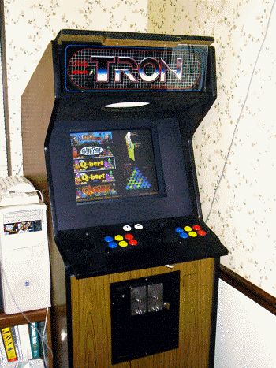

In the early nineties, myself and a group of friends began playing the arcade game "Mortal Kombat". My roommate at the time, Keith Kalet, discovered the game at the arcade in the student center at Georgia Tech (Atlanta, GA) and his description of the game was compelling, to say the least. We began playing the game regularly, and after we became good enough at the game to challenge other people, we used to search out the machines in different arcades to find other players we could challenge and learn from. Thinking back, we met a lot of really scary characters back then, and they usually got nicknames associated with them according to playing or personal hygiene style. There was "stinky", Raiden (the guy was tall and always played that character), the "p*ssy-kick" guy, the 'switchers' etc.
Anyway, around that time I discovered you could buy classic arcade games rather cheaply, and bought a number of games and boards in a single deal from a guy that had his parent's garage full of them.
Here was the haul around that time in 1992:
* Complete Millipede, which still
lives on in my parents pool room
* Pac-Man cocktail (monitor is bad), boardset works and is
actually "Pac-Man Plus" (official Namco)
* Two different Nintendo-style cocktails. One was Phoenix, which
was lost in a job-loss/left behind at the office incident by a
friend. The other was a Route-16 cocktail with a bad board, but
good monitor. I swapped in an extra Phoenix board I got in the
deal and it still lives on in my parents pool room.
* Haunted Castle boardset. Sold to a Castlevania nut in 1999 or
so, probably too cheaply. ($50) I was later told the board was
worth more due to Castlevania popularity but a little Ebay
research didn't bear that out. I didn't like the game.
* Punch-Out boardset
* Gyruss boardset
* Terra Cresta boardset
* An extra Phoenix boardset
* Galaga boardset THAT USED TO BE A DIG-DUG. Apparently, this was
a very rare conversion that I didn't know the significance of at
the time and stupidly traded to someone on the 'rec.games.video.arcade'
newsgroup for a "working" Galaga boardset. Of course,
when I finally got the boardset from him, it did *not* work. No
loss gameplay-wise, but that was before I had a digital camera
and all where I could have documented it. It was a single-board
Dig-Dug set with little parts of the board covered in epoxy, and
jumper wires going everywhere. All it did was power up with trash
on the screen, but is was a rare piece and I wish I still had it.
The guy I bought it from got it from guy he said did the mod
himself-- I remember he called him an "idiot genius".
:)
How much did this haul cost me back then, you ask. 4 complete machines, and a half dozen boardsets set me back only about $400.
Never was a deal like this to be found ever again.
Moving along, after I got married and moved back to Augusta in 1996, I got the home arcade bug again. I found that official Mortal Kombat boardsets could be had for a mere $50, so I jumped on that and bought a revision 2 board and marquee. I then set about figuring out how to play the thing without a cabinet, so I drug out the old Amiga 1084 monitor and got the video up, only to find that it isn't very fun to play arcade games by shorting the pins on the edge connector (although I'm sure I spent several minutes doing this). So, on to develop a controller for it. I bought all the buttons and joysticks from Happ Controls and went to Home Depot to see what I could find to build a control panel. I ended up getting some MDF that had a white formica-like side to it so it wouldn't be bare wood and could be wiped clean of the sweat of MK competition. I got enough to build a box about 4 feet wide, 1 foot high, and about 1.5 feet deep. This was enough by my estimation to work comfortably as a control panel for 2 players. I made the box, cut the holes, hinged the top, and then put all the wires and the board in the bottom of the box with an old PC power supply. It was an absolute mess of wires, the buttons were too far apart, and it was heavy, but I had arcade Mortal Kombat in my house!
After the box was built, my friend (Chris Hurley) and I realized that if the wiring was more standardized in the box, you could swap in other games and have a multi-arcade machine. I only had one other JAMMA board besides the MK (Haunted Castle) so that wasn't helpful. He came up with the idea of using old floppy cables (we work in a PC shop and had tons of them) wired up to female edge connectors for each board. This way you could plug in the female floppy connector to the male one in the box and swap games. Power was supplied by attaching a standard PC power connector to the female board connector also. Great idea! We rewired MK and got that working and were able to swap in Haunted Castle, then wired up one for a Moon Patrol boardset. That worked too, plus a bonus! We had a Kung-Fu Master boardset with the same pinout as Moon Patrol, so now we could play 4 different arcade games with about 2 minutes of swapping.
After a lot of neglect, I forgot about the project. I had thought of trying to make a PC joystick out of my control box at different points to play MAME, but after disassembling different keyboards at different times, it didn't look like you could easily solder the wires anywhere. As it turned out, I just picked the wrong keyboards, as many people have done it this way since then. Fast forward to about 2001 and I discovered the I-Pac. This little device was fairly inexpensive and let me connect the wires from my old control box directly to terminals on the board, then plug it straight into the keyboard port. What an innovation! No special drivers, and it was made for MAME specifically. I bought one and wired it up and was off and running with a huge control box in front of my T.V. The MK board came out and still sits on a shelf in my office. It really deserves more respect.
From there, another coworker got a few old complete machines for free, including a Pac-Man, Carnival, and an *old* Depth Charge. The Carnival cabinet seemed to be the most generic and easy to get apart, so I was able to get it from him to build my own real MAME machine. I removed all the buttons and controls from my box and destroyed it (without taking pictures, d'oh!) and relanded them on a new control panel that fit on the Carnival. Now, Carnival is NOT a wide cabinet-- it's only a 19", so 2-player fighting games are tight quarters, but it works if you're friendly enough with your opponent. (And they aren't "stinky" of previous fame). I bought a cheap 20" TV with S-Video inputs from Wal-Mart, and got an old ATI Rage card with video out off Ebay and was very disappointed with the picture quality overall. I guess I expected more from the TV, as it was great for DVD's and the like, but looked terrible with MAME at the close-range an arcade monitor needs. On top of that, the ATI is far too slow to handle anything like hardware stretching and D3D modes, so it had to go. I scrapped that setup and bought an old IBM Workstation 20" Trinitron (P200) display from a local PC liquidator, and Chris gave me his old Kyro II video card. This was the ticket. First of all, the monitor is in a black case, so you can't see that it's a PC display behind the bezel and front glass. Secondly, it handles every video mode perfectly, so even vector games look good. Thirdly, it's an old monitor with a *slight* convergence problem, so all those classic games look authentic! :)
Now, this cabinet is ugly. It's entirely wood grained with no art of any kind, so I guess Sega/Gremlin weren't into stylish cabinets back then. I know it's original because Carnival has all the little stickers inside, as well as the complete manual and everything (hand typed, no less). This cabinet did end up being a good choice overall, though, because it has several switches behind the coin door, as well as a volume control. The cabinet already had some controls inside the coin door and all of these were retasked to power, reset, and volume for the PC and speaker/subwoofer combination. The coin doors are faithfully wired to the I-Pac, so you must bring quarters to play!

It was originally a Pentium 3 @ 866MHz, which was *barely* fast enough to play emulated Mortal Kombat. It did not have nearly enough CPU speed to run MK2 or MK3, though, due to the DCS sound system. I recently upgraded it to an AMD Athlon 1800+ and it runs them all at 100% now.